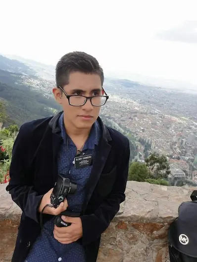

David Cambeiro | WDD 130
Hi, I’m David Cambeiro. I am a passionate creator who finds joy at the intersection of technology and media, specifically through video editing and programming. My primary focus is web development, a field where I love bringing digital ideas to life. While I recognize that mastering complex web architecture can be challenging, I am committed to the process because I believe it is an essential skill for my professional growth. My ultimate goal is to become a professional software engineer, building impactful and innovative solutions that solve real-world problems. Beyond my technical pursuits, my life is guided by my faith as a member of The Church of Jesus Christ of Latter-day Saints. My values and my commitment to service provide me with the discipline and perspective needed to excel in my studies and my work. I am also a musician at heart and love spending my time playing various instruments, which allows me to express my creativity in a different way. I am always looking for new opportunities to learn, grow, and contribute to both my community and the tech industry.